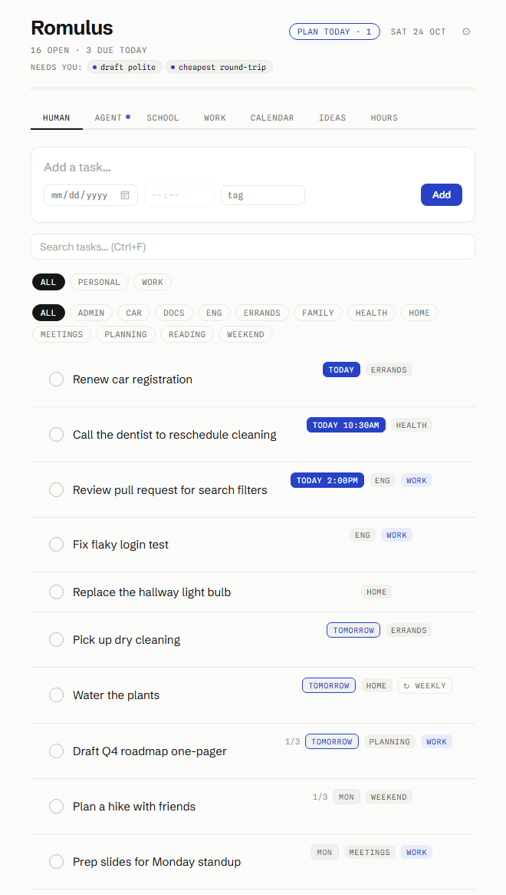
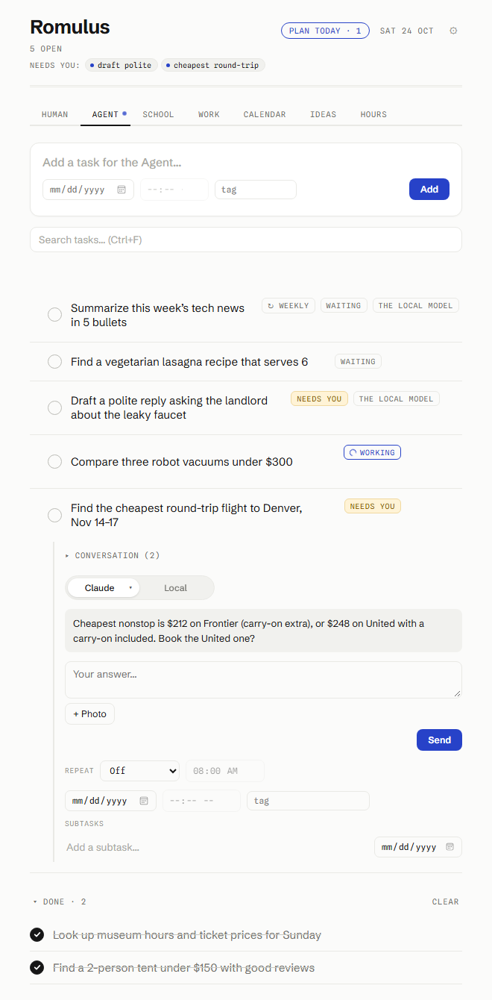

A to-do list with an agent in it.
Write a task the way you'd tell a person. "Find the cheapest flight to Denver the weekend of the 14th." "Order the groceries." "Draft a reply to the landlord." Hand it to the Agent and it goes and does it: searches, reads, fills forms, compares prices, builds the cart. It comes back only when it needs a decision.
Also for every other platform, or run it from source.


Made-up demo data.
It asks before anything final.
The Agent never buys, sends, submits, books or deletes until you reply yes to the exact thing it described. That rule is enforced in code, and it is the one rule contributors can't change. A question is not a yes. "Ok" counts only on its own.
Plug in what you already pay for, or run.
A Claude or ChatGPT plan, an OpenRouter account, a Gemini key, the free tiers from Grok, Groq, Cloudflare or NVIDIA, or your own model on your own hardware through Ollama. Connect several and the app tries them in your order.
Some tasks never leave your machine.
Anything that touches the bank, medical records or passwords goes only to your local model. The Locked profile that fills forms and job applications is readable by that model alone.
A Finance tab instead of Rocket Money.
Every account in one place, recurring bills and subscriptions found on their own, net worth over time, an income statement and balance sheet, receipts from your inbox, live stock prices. Read-only bank access for about $15 a year. Encrypted on your computer, never on a server.
What's inside
The same tabs on the desktop and on the phone, kept in sync through a Supabase project you own.
Your own to-dos: due dates, times, tags, subtasks, repeats, drag to reorder, search.
Tasks the AI does. A live view of what it's doing, its questions, its results, the conversation. A pill on each task picks which AI.
Assignments, with due dates pulled from Blackboard or D2L calendar links. The class is the tag.
A second list, synced with the rest.
Extra views: the month, a board of note cards, a log of hours per day. Google and Microsoft calendars included.
Accounts, recurring bills and subscriptions, net worth, statements, receipts from Gmail, live stock prices. Bank read-only through SimpleFIN. Encrypted twice, locks itself, and the phone can get its own copy from a QR code.
What the Agent can do today: research and writing; shopping on Amazon and Walmart, groceries included, with the cart built and held for your yes; flights, tickets and bookings with a seat map you can override; forms and job applications filled from the Locked profile; email through Claude; a morning look-ahead over your calendar and inbox; tasks that start on their own when an email arrives, a calendar event is near or a web page changes; goals planned first and then run as a chain of steps; deep research (#legion) that your local model splits into pieces so no single cloud AI sees the whole question; its own headless browser you can watch and take over.
Download
Free, and the installed copy updates itself. Every file below is built on GitHub's runners from the public source, with a SHA-256 checksum next to it on the release page.
chmod +x) and run it.
AndroidYour device
Romulus-1.0.5.apk
Install the APK, then scan the sync code from the desktop app in Settings → Device sync. It tells you when a new version is out.
From source: Node 22 or newer, then npm install and npm start.
Then: the setup guide walks through connecting an AI (every option, with the buttons to press), syncing with your phone, calendars, Finance, and where your keys live.
iPhone: not yet. The phone app is Android only.
Privacy, in short
Everything you connect stays on the computer where you connected it. There is no telemetry.
Open source
The whole app is on GitHub under the MIT license: the Electron desktop app, the Agent, the Android wrapper and the sync project's SQL. Installers live in a releases repository of their own.
# run it from source
git clone https://github.com/jamesbobdev-gif/Romulus.git
cd Romulus
npm install
npm start
Contributing: small, focused changes land fastest. Skills and site notes for the Agent are short markdown files and new ones are welcome. The ground rules are in CONTRIBUTING.md; the one that matters most is that "ask before anything final" stays enforced in code. Found a security problem? SECURITY.md says how to report it.